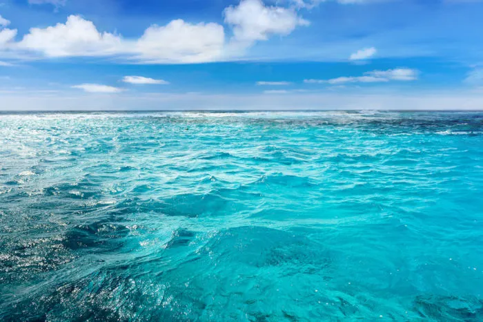
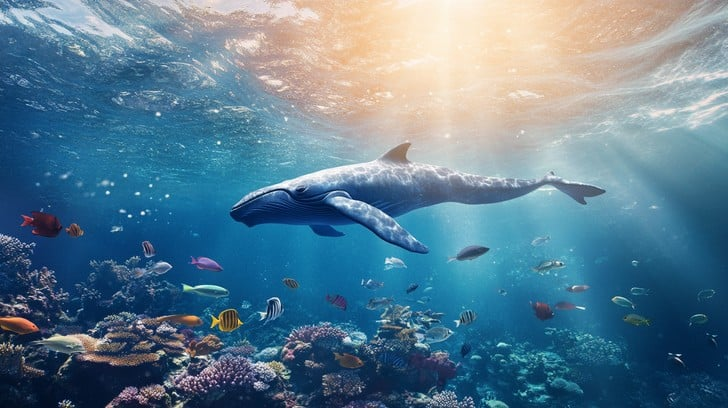
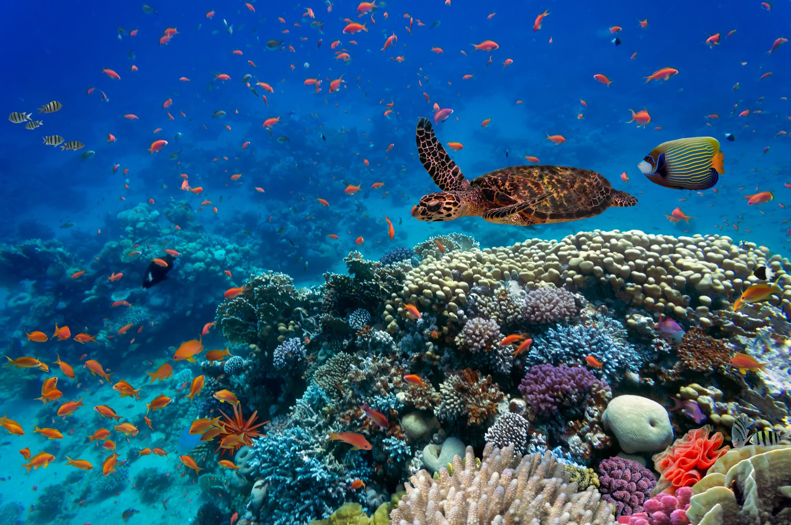
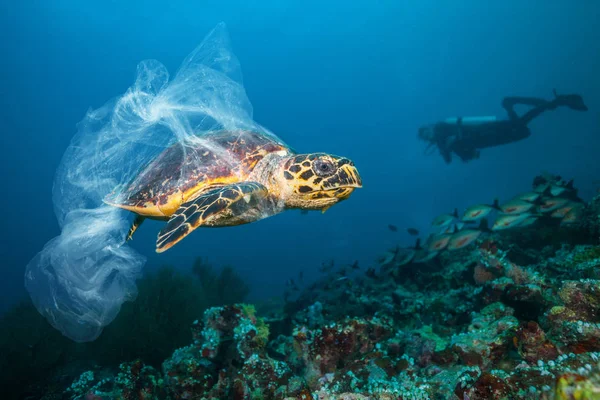

Mares, rios e oceanos
Entenda as diferenças e como tudo se conecta pelo ciclo da água. Como mares e oceanos regulam o clima e influenciam a nossa vida.
Ler maisNosso propósito é apresentar ações e projetos que preservam a vida marinha. Acesse ONGs, pesquisas, mutirões e entenda a importância da conservação dos oceanos.

A vida marinha abrange todos os organismos vivos que habitam os oceanos e mares do planeta. Desde o plâncton microscópico até as baleias azuis gigantes, incluindo peixes, crustáceos, moluscos, corais e muitos outros. Essa vasta biodiversidade é essencial para o equilíbrio do ecossistema marinho e para o bem-estar do planeta, regulando o clima, fornecendo alimentos e serviços ecossistêmicos.
Instituto Argonauta protege a vida marinha em SP; resgata e reabilita animais, faz pesquisa e educação ambiental, monitora praias e mobiliza voluntários.
Sea Shepherd Brasil defende os oceanos com ações diretas, ciência cidadã e educação; combate pesca ilegal e plástico mobilizando voluntários.
Mirpuri Foundation protege o oceano com pesquisa, educação e projeto Seabin, unindo parceiros para reduzir plástico e cuidar de ecossistemas.
Esta ONG realiza o plantio de mudas de árvores nativas da Mata Atlântica para a preservação das nascentes, em colaboração com escolas locais.
Uma área de proteção ambiental onde são realizadas ações de reflorestamento e preservação, com a participação de escolas e outras organizações.
Dica: clique em "Ver no mapa" nos cards para focar o marcador.
Dica: clique em "Ver no mapa" nos cards para focar o marcador.

Entenda as diferenças e como tudo se conecta pelo ciclo da água. Como mares e oceanos regulam o clima e influenciam a nossa vida.
Ler mais
Recifes, manguezais, pradarias marinhas, costões e zonas pelágicas. Veja onde estão e por que importam (com mapa interativo).
Explorar ecossistemas
Vaquita, tartarugas marinhas, corais e tubarões. Saiba o que está acontecendo e como ajudar.
Conhecer casos